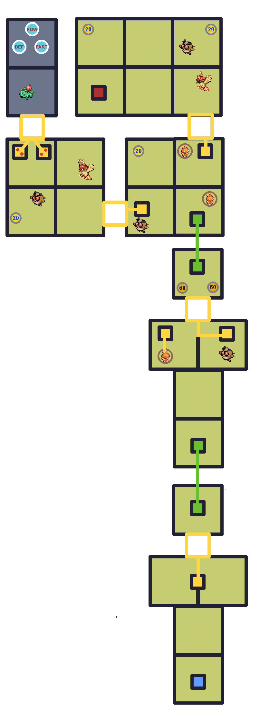
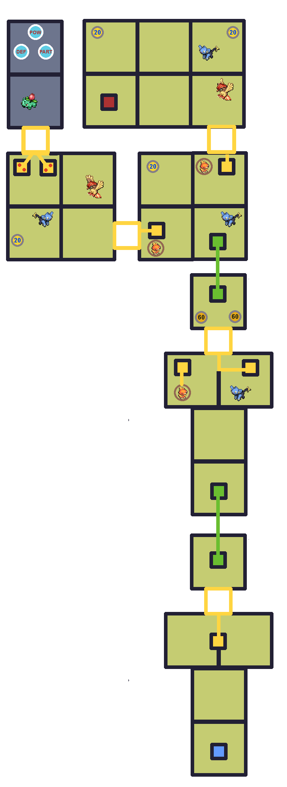

Gauge

Bulbasaur (10%)


Noctowl (7%)


Luxio (3%)
Check out WarriorGallade's post on this Mission for more specific tips.
| Rank | AP | Slates |
|---|---|---|
| S | 5 | Pidgeotto (90%) Sceptile (10%) |
| A | 4 | Turtwig (100%) |
| B | 3 | N/A |
| C | 2 | N/A |
Ivysaur is inaccessible when playing solo.
| Pokémon | Quantity | Group | Friendship Gauge |
AP | Slates | |
|---|---|---|---|---|---|---|
|
|
Ivysaur | 1 (2+ players) | Grass | 600 | 2 | Ivysaur (90%) Bulbasaur (10%) |
|
|
Pidgeotto | 2 | Flying | 360 | 2 | N/A |
|
|
Hoothoot | 4 (Pattern 1) | Flying | 108 | 1 | Hoothoot (93%) Noctowl (7%) |
|
|
Torchic | 3 | Fire | 168 | 1 | N/A |
|
|
Shinx | 4 (Pattern 2) | Electric | 180 | 1 | Shinx (97%) Luxio (3%) |
| Pokémon | Group | Friendship Gauge |
Agitated Gauge |
AP | |
|---|---|---|---|---|---|
 |
Sceptile | Grass | 870 | 73 | 4 |
Text of this section & map image are taken from WarriorGallade's post on the subject, supplemented with information from the official Prima guide book, and condensed/reorganized slightly. Used with permission.
This Mission contains two different patterns of wild Pokémon that can appear. The two possible Patterns are shown below.
Pattern 1:

Pattern 2:

Legend:
 Icons like this (darker) give the player extra seconds, determined by the number.
Icons like this (darker) give the player extra seconds, determined by the number. Icons like this (lighter) restore the player's Styler by the specified number of energy.
Icons like this (lighter) restore the player's Styler by the specified number of energy. Icons like this (POW) increase the player's Styler's power by 20%.
Icons like this (POW) increase the player's Styler's power by 20%. Icons like this (PART) increase the player's Partner Pokémon's Poké Assist power by 20%.
Icons like this (PART) increase the player's Partner Pokémon's Poké Assist power by 20%. Icons like this (DEF) reduce the player's damage taken by 1 (to a minimum of 1).
Icons like this (DEF) reduce the player's damage taken by 1 (to a minimum of 1).This is the first mission to introduce patterns. As far as we know, all patterns are equally likely. This Mission has only two patterns, but later missions will get more complex. Neither Shinx nor Hoothoot is hard to capture; if you want to grind for Sceptile's Slate, aim for the Shinx variation since it drops Shinx and Luxio slates, and Electric-types are rare this early. Also, this is the first stage with multiplayer-only areas, which hide rare Pokémon or powerups but aren't required to complete the mission solo.
This Mission also introduces switches. Stand still on them for a few seconds to unlock connecting platforms. The layout is simple; find both Pidgeotto, but watch for angry Torchic using ranged Ember! Head to the red teleporter when done.
Despite its high speed, Sceptile often pauses for a few seconds at a time, giving good looping windows. Large loops let you mostly ignore the ! and !!! attacks; only worry about !! or sudden movements. Poké Assists help pin Sceptile down quickly to minimize risk, even though time isn't tight.
Sceptile's attacks are:
Difficult, but doable with a few levels and/or a good Poké Assist. You don't have a reliable Grass-type counter yet, so it may be worth returning later; that said, generous time limits mean an A-rank on the first try is likely.
Both slowing and quick close-range Assists work well against Sceptile's speed and attack patterns. Piplup, despite the type disadvantage, is surprisingly effective at slowing Sceptile down for consecutive loops. Torchic, despite its good type matchup, is unusable here: Sceptile moves too fast and doesn't linger long enough for Torchic's close-range assist to stack damage. Pidgeot, obtainable in the next Mission, is a strong choice, but its Slate will likely take a while to obtain since that mission is notably harder.